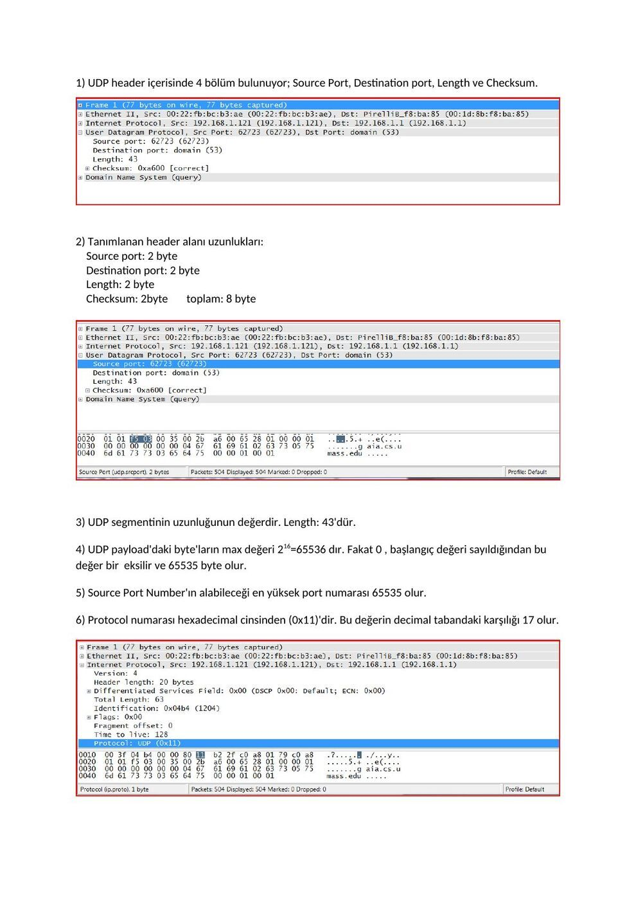
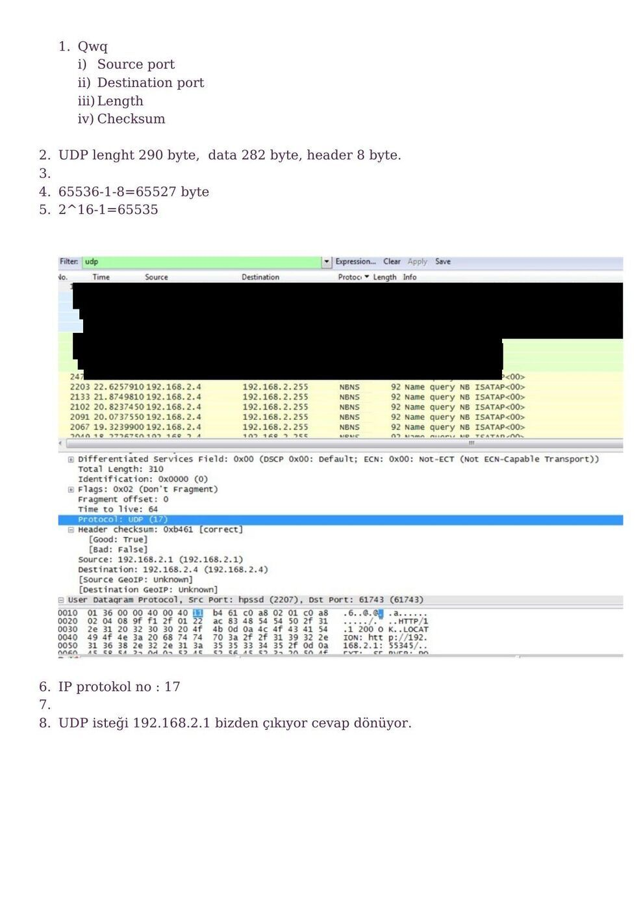
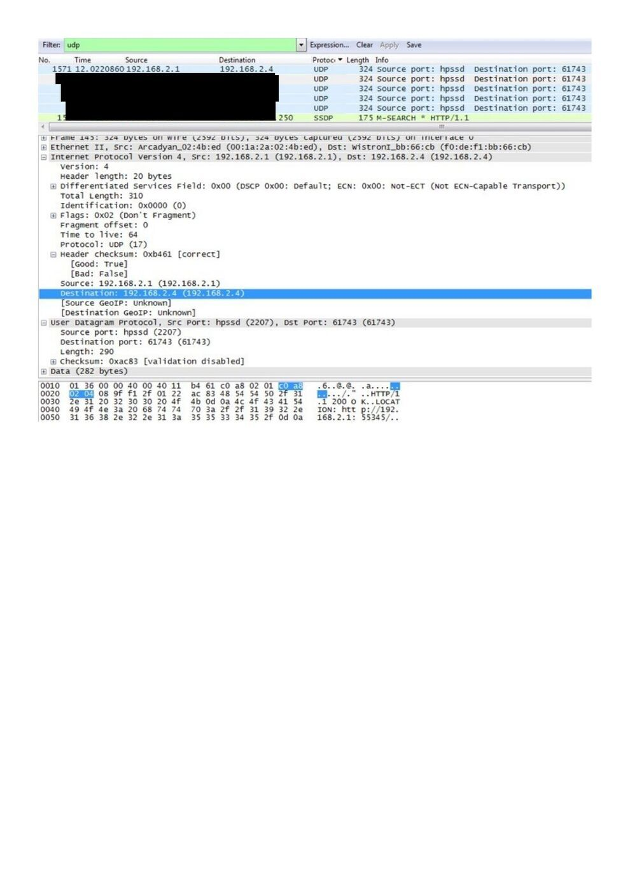
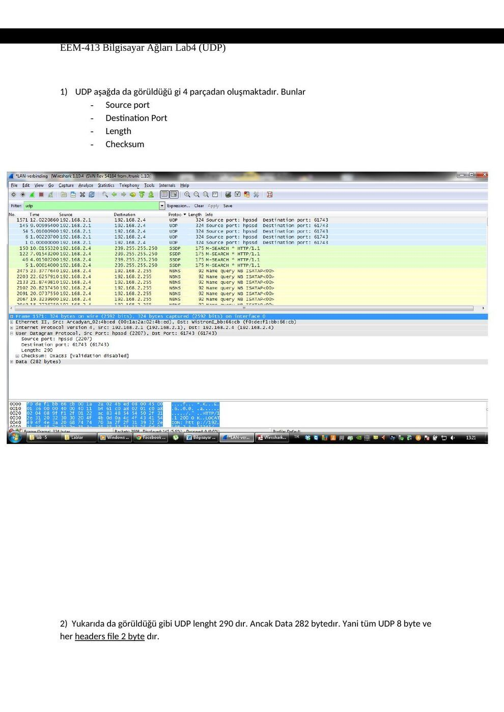
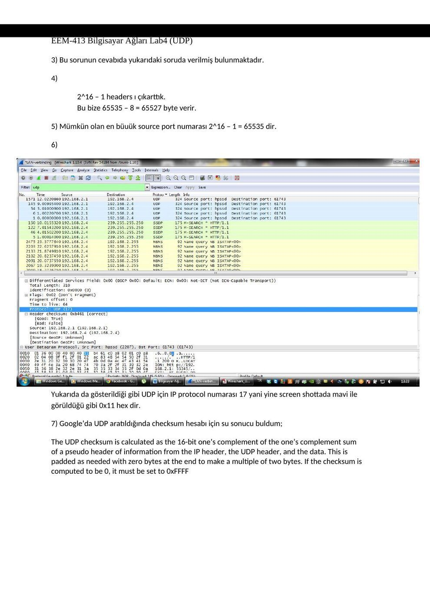

· EEM413
EEM413 Bilgisayar Ağları: UDP Laboratuvarı: Başlık Alanları ve Datagramlar
EEM413 – Bilgisayar Ağları · 18.12.2015 · 18.10.2026
Ders arşivindeki öğrenci laboratuvar raporlarıdır; öğrenci adları, numaraları ve kimlik bilgileri çıkarılmıştır. Belge üzerindeki tarih bulunmadığında kaynak dosyanın oluşturulma ya da son değiştirilme tarihi kullanılmıştır. Belgelerin arşiv için hazırlanmış PDF kopyaları yazının sonunda indirilebilir.
UDP raporu A
EEM 413 BİLGİSAYAR AĞLARI DENEY-4 UDP
1. UDP header içerisinde 4 bölüm bulunuyor; Source Port, Destination port, Length ve Checksum.
2. Tanımlanan header alanı uzunlukları: Source port: 2 byte Destination port: 2 byte Length: 2 byte Checksum: 2byte toplam: 8 byte
3. UDP segmentinin uzunluğunun değerdir. Length: 43'dür.
4. UDP payload'daki byte'ların max değeri 216=65536 dır. Fakat 0 , başlangıç değeri sayıldığından bu değer bir eksilir ve 65535 byte olur.
5. Source Port Number'ın alabileceği en yüksek port numarası 65535 olur.
6. Protocol numarası hexadecimal cinsinden (0x11)'dir. Bu değerin decimal tabandaki karşılığı 17 olur.
7. UDP checksum hesaplanırken Pseudo Header Field kullanılır. (IP header, UDP header, data) Eğer checksum sonucu 0 çıkarsa, 0xFFFF’e set edilir.
8. İlk paket için ; source port :: 62723 , Destination port :: 53. İkinci paket için source port :: 53 , Destination port :: 62723.
Extra Credit: Bir UDP paket yakalandı.

UDP raporu B
Bilgisayar Ağları Laboratuva rı 4
UDP
1. Qwq i) Source port ii) Destination port iii) Length iv) Checksum
2. UDP lenght 290 byte, data 282 byte, header 8 byte.
3.
4. 65536-1-8=65527 byte
5. 2^16-1=65535
6. IP protokol no : 17
7.
8. UDP isteği 192.168.2.1 bizden çıkıyor cevap dönüyor.


UDP raporu C
EEM-413 Bilgisayar Ağları Lab4 (UDP)
NOT: Genel olarak internete bağlanıp kısa bir gezinti yapıldığında UDP transmit ve receiving işlemlerini gerçekleştirdik ve böyle bir screen shot oluştu.
EEM-413 Bilgisayar Ağları Lab4 (UDP)
1. UDP aşağda da görüldüğü gi 4 parçadan oluşmaktadır. Bunlar
- Source port
- Destination Port
- Length
- Checksum
2. Yukarıda da görüldüğü gibi UDP lenght 290 dır. Ancak Data 282 bytedır. Yani tüm UDP 8 byte ve her headers file 2 byte dır.
EEM-413 Bilgisayar Ağları Lab4 (UDP)
3. Bu sorunun cevabıda yukarıdaki soruda verilmiş bulunmaktadır.
4.
2^16 – 1 headers ı çıkarttık. Bu bize 65535 – 8 = 65527 byte verir.
5. Mümkün olan en büuük source port numarası 2^16 – 1 = 65535 dir.
6.
Yukarıda da gösterildiği gibi UDP için IP protocol numarası 17 yani yine screen shottada mavi ile görüldüğü gibi 0x11 hex dir.
7. Google’da UDP aratıldığında checksum hesabı için su sonucu buldum;
The UDP checksum is calculated as the 16-bit one’s complement of the one’s complement sum of a pseudo header of information from the IP header, the UDP header, and the data. This is padded as needed with zero bytes at the end to make a multiple of two bytes. If the checksum is computed to be 0, it must be set to 0xFFFF
EEM-413 Bilgisayar Ağları Lab4 (UDP)
8. UDP isteği benim tarafımdan yollanıyor.
UDP cevabı dönüyor.


Not: UDP başlığı 8 bayttır; UDP Length başlık ve yükün toplamıdır. 16 bitlik alanın en büyük değeri 65.535’tir. IPv4’te seçenekler olmadan UDP kullanıcı yükünün üst sınırı 65.535−20−8 = 65.507 bayttır; yalnız UDP uzunluk alanından 8 çıkarmak IP sınırını hesaba katmaz.